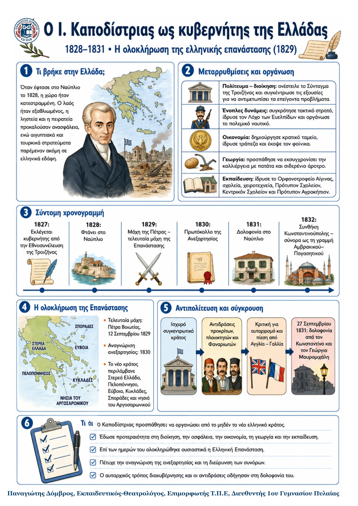

Δεν βρέθηκε η λέξη ή η φράση μέσα στην ενότητα.
1Η βασική ιδέα
Ο Ιωάννης Καποδίστριας ανέλαβε τη διακυβέρνηση μιας χώρας κατεστραμμένης από τον πόλεμο. Προσπάθησε να δημιουργήσει ισχυρό κράτος, οργανωμένη διοίκηση, στρατό, οικονομία και σχολεία. Παράλληλα, συνέβαλε καθοριστικά στην αναγνώριση της ανεξαρτησίας και στη διεύρυνση των συνόρων. Η συγκεντρωτική του πολιτική, όμως, προκάλεσε έντονη αντιπολίτευση και οδήγησε τελικά στη δολοφονία του.
2Η κατάσταση που παρέλαβε
Ο Καποδίστριας εκλέχθηκε από την Εθνοσυνέλευση της Τροιζήνας την άνοιξη του 1827 και έφτασε στο Ναύπλιο στις αρχές του 1828.
Η χώρα ήταν κατερειπωμένη και ο λαός εξαθλιωμένος. Ληστές και πειρατές έλεγχαν μεγάλες περιοχές.
Αιγυπτιακές δυνάμεις παρέμεναν στη νοτιοδυτική Πελοπόννησο και τουρκικές στη Στερεά Ελλάδα.
Το κράτος δεν διέθετε οργανωμένη διοίκηση, σταθερά έσοδα, τακτικό στρατό ή ολοκληρωμένο εκπαιδευτικό σύστημα.
3Το έργο του Καποδίστρια
| Τομέας | Βασικές ενέργειες | Στόχος και σημασία |
|---|---|---|
| Πολίτευμα και διοίκηση | Ανέστειλε το Σύνταγμα της Τροιζήνας και συγκέντρωσε όλες τις εξουσίες. Η Δ΄ Εθνοσυνέλευση στο Άργος επικύρωσε την πολιτική του. | Επιδίωκε γρήγορες αποφάσεις για τα επείγοντα προβλήματα και τη δημιουργία ισχυρού, συγκεντρωτικού κράτους. |
| Ένοπλες δυνάμεις | Οργάνωσε τακτικό στρατό, ίδρυσε τον Λόχο των Ευελπίδων, έκανε βήματα για τακτικό ναυτικό και περιόρισε την πειρατεία. | Ενίσχυσε την εσωτερική τάξη και συνέχισε τον αγώνα για την απελευθέρωση της Στερεάς Ελλάδας. |
| Οικονομία και γεωργία | Ίδρυσε κρατικό ταμείο και τράπεζα, έκοψε τον φοίνικα, περιόρισε τις δημόσιες δαπάνες και εισήγαγε την πατάτα και το σιδερένιο άροτρο. | Προσπάθησε να εξασφαλίσει έσοδα, σταθερό νόμισμα και πιο παραγωγική γεωργία. |
| Εκπαίδευση | Ίδρυσε το Ορφανοτροφείο της Αίγινας, αλληλοδιδακτικά και ελληνικά σχολεία, χειροτεχνεία, Πρότυπον και Κεντρικόν Σχολείον, καθώς και το Πρότυπον Αγροκήπιον. | Έδωσε προτεραιότητα στις βασικές γνώσεις, στην εκπαίδευση δασκάλων και στην επαγγελματική κατάρτιση. |
4Η ολοκλήρωση της επανάστασης και η ανεξαρτησία
12 Σεπτεμβρίου 1829: στην Πέτρα της Βοιωτίας οι ελληνικές δυνάμεις του Δημητρίου Υψηλάντη νίκησαν επίλεκτες τουρκικές δυνάμεις. Ήταν η τελευταία μάχη της Επανάστασης.
1830: με το Πρωτόκολλο της Ανεξαρτησίας η Ελλάδα αναγνωρίστηκε ως ανεξάρτητο κράτος.
1832: με τη Συνθήκη της Κωνσταντινούπολης τα σύνορα έφτασαν στη γραμμή Αμβρακικού–Παγασητικού.
Το νέο κράτος περιλάμβανε τη Στερεά Ελλάδα, την Πελοπόννησο, τα νησιά του Αργοσαρωνικού, την Εύβοια, τις Κυκλάδες και τις Σποράδες.
5Γιατί δημιουργήθηκε αντιπολίτευση
| Ποιοι αντέδρασαν | Γιατί αντέδρασαν | Πώς εκδηλώθηκε η σύγκρουση |
|---|---|---|
| Πρόκριτοι με τοπική εξουσία, πλούσιοι πλοιοκτήτες, έμπειροι Φαναριώτες και φιλελεύθεροι διανοούμενοι. | Έχαναν την παλιά τους δύναμη ή θεωρούσαν αυταρχική την αναστολή του Συντάγματος. Αγγλία και Γαλλία τον θεωρούσαν κοντά στη Ρωσία. | Εξεγέρσεις, έντονη αρθρογραφία, ανατίναξη πολεμικών πλοίων στον Πόρο και όξυνση μετά τη φυλάκιση του Πετρόμπεη Μαυρομιχάλη. |
6Η σύγκρουση και η δολοφονία
Από τις αρχές του 1830 ξέσπασαν εξεγέρσεις. Ο Ανδρέας Μιαούλης, αντίπαλος πλέον του Κυβερνήτη, ανατίναξε στον Πόρο τα δύο μεγαλύτερα ελληνικά πολεμικά πλοία. Η Ύδρα έγινε κέντρο της αντιπολίτευσης και η εφημερίδα «Απόλλων» επιτέθηκε έντονα στον Καποδίστρια. Η ένταση κορυφώθηκε μετά τη φυλάκιση του Πετρόμπεη Μαυρομιχάλη. Στις 27 Σεπτεμβρίου 1831 ο Κωνσταντίνος και ο Γεώργιος Μαυρομιχάλης δολοφόνησαν τον Κυβερνήτη στο Ναύπλιο.
7Δύο αντίθετες αποτιμήσεις
Η κριτική του Ιωάννη Κωλέττη Παρουσιάζει τον Καποδίστρια ως αυταρχικό ηγέτη που περιόρισε τα πολιτικά δικαιώματα, την ελευθεροτυπία και τη συμμετοχή των παλιών ηγετών. |
Η θετική άποψη του Εϋνάρδου Τον θεωρεί ανιδιοτελή πατριώτη που θυσίασε τα πάντα για την Ελλάδα και του οποίου η απώλεια προκάλεσε μεγάλη ζημιά στη χώρα. |
|---|
8Τι πρέπει να θυμάμαι
Ο Καποδίστριας προσπάθησε να οργανώσει από την αρχή το ελληνικό κράτος.
Το έργο του κάλυψε τη διοίκηση, τον στρατό, την οικονομία, τη γεωργία και την εκπαίδευση.
Το 1829 ολοκληρώθηκαν οι πολεμικές επιχειρήσεις και το 1830 αναγνωρίστηκε η ανεξαρτησία.
Η συγκεντρωτική διακυβέρνηση προκάλεσε αντιδράσεις από ισχυρές κοινωνικές και πολιτικές ομάδες.
